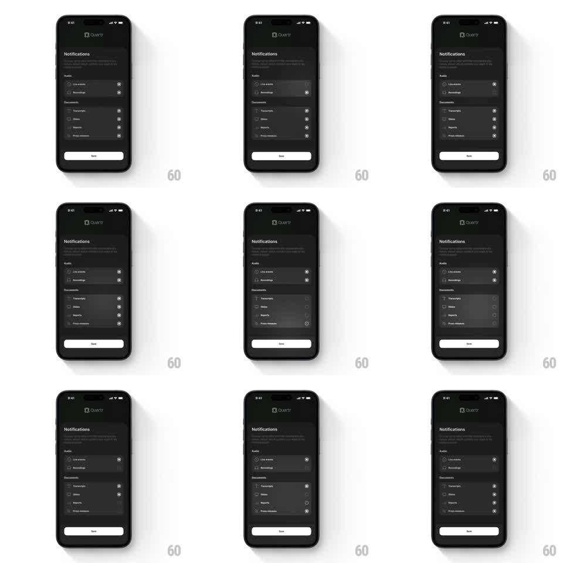

Media
Frame-by-frame

Rebuild this interaction 1:1: Quartr's notification preferences - circular checkboxes in grouped settings rows toggle with a springy scale pulse and overshoot, the check popping in as the ring fills.

Rebuild this interaction 1:1: Quartr's notification preferences - circular checkboxes in grouped settings rows toggle with a springy scale pulse and overshoot, the check popping in as the ring fills. ## Integration Integration: stack-agnostic spec - springs given as stiffness/damping, timed motions as duration + curve; map every value to your framework and animation library of choice. ## Scene Dark settings screen: Quartr logo header, "Notifications" title with subcopy, then grouped cards - "Audio" (Live events, Recordings) and "Documents" (Transcripts, Slides, Reports, Press releases). Each row has a label left and a circular checkbox right. A full-width "Save" button sits at the bottom. ## Motion spec Pattern: springy checkbox toggle pulse, ~350ms per toggle. - Check on: the circle scales down to 0.85 (80ms, anticipation) then springs to 1 with overshoot (spring ~420/16, peaking ~1.12); the fill sweeps in and the checkmark draws (stroke dash, 150ms) mid-spring. - Check off: the checkmark fades and the ring drains (120ms) with a smaller pulse (peak ~1.05). - Row feedback: the tapped row flashes a subtle background highlight (100ms). - Haptic feel: one crisp tick per toggle - the pulse is the tactile hit. ## Calibration - The overshoot is visible but small; the checkbox never wobbles twice. - Parent groups do not cascade - each row toggles independently. ## Reduced motion Checkbox state swaps with a 150ms cross-fade; no scale pulse. ## Don't miss - Checkboxes are circular, not square - ring outline when off, filled with check when on. - The Save button stays static; all motion is in the toggles.